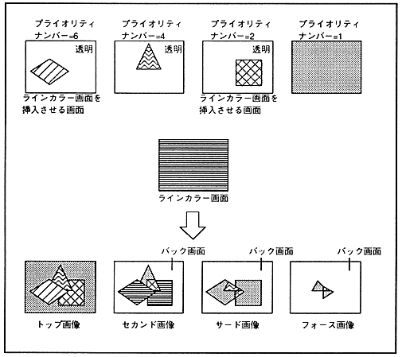

Line color screen is a screen that does not have a priority number register and forcibly inserts it as a second image where the specified screen is the top image and performs color calculation. At that time, in the part where the line color screen is inserted, the second image before insertion becomes the third image, and the third image becomes the image below it (force image). Figure 11.2 shows the line color screen insertion.
Figure 11.2 Insert line color screen
